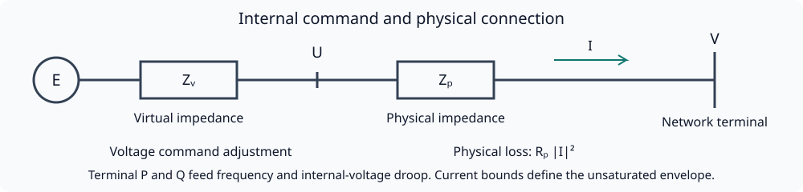
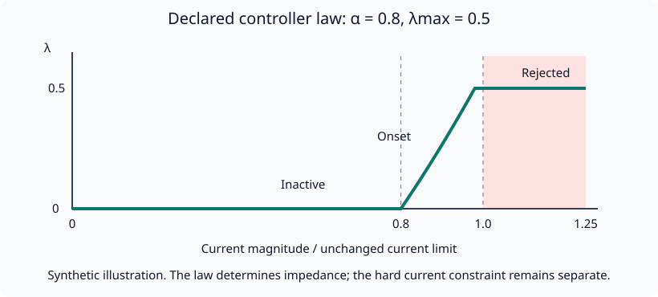

Voltage-source grid-forming equilibrium
This optional refinement belongs to the frequency-aware Q–V side study. The main terminal Q–V study does not require internal impedance parameters.
A voltage-source grid-forming (GFM) controller specifies an internal voltage. The network and connection impedance determine its current. This differs from requesting terminal active/reactive powers and clipping those requests to a capability circle, as in the static inverter model.
This implementation describes a balanced steady-state controller, with an optional threshold virtual-impedance limiter. It does not model fault ride-through, synchronization transients or stability. Without the optional limiter, the model remains unsaturated. In both modes the original hard current bound is enforced; finite virtual impedance does not guarantee a feasible current-limited equilibrium.

Voltages, current and power
All electrical quantities below use the plant MVA base and the network terminal voltage base. Complex phasors are denoted with an underline; j is the imaginary unit and a superscript * means complex conjugation.
\[\underline I=\frac{\underline E-\underline V}{Z_v+Z_p},\qquad \underline U=\underline E-Z_v\underline I,\qquad P+jQ=\underline V\underline I^*.\]
| Symbol | Meaning | API field or result |
|---|---|---|
| $\underline E$ | Virtual internal voltage phasor, pu | internal_voltage |
| $\underline U$ | Actual converter-side voltage phasor before the physical connection, pu | converter_voltage |
| $\underline V$ | Network terminal voltage phasor, pu | Network vm, va |
| $\underline I$ | Current toward the network, plant pu | current |
| $Z_v$ | Fixed virtual impedance, plant pu | z_virtual |
| $Z_p$ | Additional physical series connection impedance, plant pu | z_physical |
| $P,Q$ | Terminal active and reactive injections, plant pu | p, q |
Impedances must be finite with nonnegative resistance and reactance; their sum must be nonzero. This initial contract excludes capacitive series impedances, LCL filter capacitors and remote voltage regulation. Physical impedance already represented by a network branch must not also be included in z_physical.
The distinction between the two impedances matters for energy accounting:
\[\operatorname{Re}(\underline U\underline I^*)=P+R_p|\underline I|^2, \qquad R_p=\operatorname{Re}(Z_p).\]
Only $R_p|\underline I|^2$ is physical connection loss. Virtual resistance changes the command; it is not an energy-consuming network element. The existing AC state stores terminal injections. Additional connection losses are reported separately in MW and are not included in the native network branch-loss total. DC-side energy, converter losses and converter-side power ratings are not inferred. Source P/Q and apparent-power bounds, and p_available, are interpreted at the terminal.
Terminal-feedback droop
\[f=f_0-m_p(P-P_0),\qquad |\underline E|=E_0-n_q(Q-Q_0).\]
Here $f$ is the common settled frequency in Hz, $f_0$ is f_ref_hz, $m_p$ is p_droop_hz in Hz per plant-pu active power, and $P_0$ is p_ref. $E_0$ is e_ref, $n_q$ is q_droop in voltage pu per plant-pu reactive power, and $Q_0$ is q_ref. Both slopes must be positive. These equations use delivered terminal powers, not virtual-source power or converter-side power. There is no deadband, reference adaptation or integral controller in this version. Optional impedance limiting changes the connection equation, not these outer droop laws.
Internal voltage is represented by real and imaginary components in the same reference frame as the network. Moving the network angle reference rotates the internal phasors without changing physical powers or voltage magnitudes.
Operating bounds
The model enforces source P/Q boxes and source apparent ratings through the native AC builder, plus these plant declarations:
\[|\underline I|\le I_{\max},\quad P^2+Q^2\le S_{\max}^2,\quad P\le P_{\mathrm{available}},\]
\[E_{\min}\le|\underline E|\le E_{\max},\qquad U_{\min}\le|\underline U|\le U_{\max}.\]
i_max is the continuous current envelope, s_max the terminal apparent-power envelope and p_available the terminal active-power ceiling, all plant pu. e_bounds and u_bounds are the respective positive voltage intervals. The second interval is a declared converter-voltage envelope, not a derived DC modulation model. Network voltage and thermal bounds remain unchanged. Offline generators inject zero and have a zero internal-phasor sentinel; energized-source equations are disabled for them.
Threshold virtual-impedance limiter
ThresholdVirtualImpedance implements a declared finite-gain, memoryless controller:
\[I_{\mathrm{on}}=\alpha I_{\max},\qquad \lambda=\min\left(\lambda_{\max},\max\left(0, \frac{|\underline I|^2}{I_{\mathrm{on}}^2}-1\right)\right),\]
\[Z_v^{\mathrm{eff}}=Z_v+\lambda Z_g,\qquad \underline E-\underline V=(Z_p+Z_v^{\mathrm{eff}})\underline I,\qquad \underline U=\underline E-Z_v^{\mathrm{eff}}\underline I.\]
Here $\alpha$ is onset_fraction, strictly between zero and one; $I_{\mathrm{on}}$ is the current onset on the plant base; $\lambda$ is the dimensionless impedance multiplier; $\lambda_{\max}$ is the positive max_multiplier ceiling; and $Z_g$ is impedance_gain, a nonzero passive complex impedance on the plant base. Its resistance and reactance must be nonnegative. Settings are supplied once and remain fixed; the optimizer cannot choose a different impedance independently of the measured-current law. The squared-current law is the specific controller implemented here; it is not a claim of equivalence to every threshold-impedance controller or a manufacturer implementation.

The three algebraic regions are:
| Current condition | Controller action |
|---|---|
| `` | \underline I |
| ``I_{\mathrm{on}}< | \underline I |
| `` | \underline I |
The same $|\underline I|\le I_{\max}$ constraint remains active in every region. If sufficient impedance is unavailable, the operating point is rejected. There is no implicit clipping fallback, load shedding, widened P/Q capability, or changed frequency/voltage bound. A ceiling may be unreachable inside the hard current envelope for some parameter choices; that is permitted and reported.
Physical loss remains $\operatorname{Re}(Z_p)|\underline I|^2$. Neither the fixed nor the adaptive virtual resistance is counted as dissipated energy. The controller reduces current for fixed internal and terminal phasors; this does not imply monotonic current reduction in a coupled constant-power network where voltages move.
Limiter equations use exact min/max, without smoothing or enlarged tolerances. They are continuous but nonsmooth at the two thresholds. Numerical failure is reported as such, not as proof of infeasibility. Diagnostic modes inactive, active and ceiling use the replay tolerance only to label proximity to a boundary.
For independent replay, the evaluator solves the scalar multiplier equation by bracketed bisection. Passive impedances make current magnitude nonincreasing with multiplier, giving a unique scalar controller response for fixed voltage phasors. It compares this reconstructed response with stored powers and multiplier; it does not repair the result. This local scalar uniqueness does not establish uniqueness or stability of the coupled AC equilibrium.
# Synthetic settings; the plant's existing i_max and all other bounds stay fixed.
limiter = ThresholdVirtualImpedance(
onset_fraction=0.8, impedance_gain=0.005+0.02im, max_multiplier=0.5)
result = solve_voltage_source_opf(case, [plant];
limiters=Dict(plant.generator_id => limiter), frequency_hz=50.0)
report = validate_voltage_source_opf(case, result)
# report.plants records multiplier, mode, current and physical connection loss.Offline sources have zero injection, internal-phasor and multiplier sentinels. Their limiter settings remain stored but no energized-source law is imposed. No time constants, anti-windup, hysteresis, state transitions or recovery trajectory are implemented here. Those require a matching dynamic controller.
Solving and checking
# Synthetic demonstration settings, not manufacturer data.
plant = VoltageSourceGFM(
generator_id=1, terminal_bus=1, base_mva=100.0,
z_physical=0.01+0.10im, z_virtual=0.02+0.05im,
p_ref=0.5, q_ref=0.0, f_ref_hz=50.0, p_droop_hz=2.0,
e_ref=1.0, q_droop=0.05,
e_bounds=(0.8, 1.2), u_bounds=(0.8, 1.2),
i_max=2.0, s_max=2.0, p_available=2.0)
# `case` must contain the declared generator and terminal bus.
result = solve_voltage_source_opf(case, [plant]; frequency_hz=50.0)
report = validate_voltage_source_opf(case, result)With prescribed frequency, unassigned generators retain their native dispatch freedom. To solve common frequency, supply frequency_bounds=(48.0,52.0) and assign every other generator, including offline generators, either a StaticInverter in inverters or a GeneratorFrequencyResponse in responses. Duplicate generator controllers are rejected. Only connected networks are supported. Supply branch_angle_bounds=Dict(branch_id => (lower, upper)) to retain declared branch angle-difference limits in radians. These are enforced in the native solve and independent replay, and ignored only for branches removed by an outage. All settings remain fixed and the solver uses a feasibility objective.
initial_state accepts a network AC state. The internal-voltage starting point is reconstructed from its terminal power and voltage, without changing any equation. This is not yet integration with preventive dispatch design, SCOPF or multi-period builders, and there is no dynamic operating-point export adapter.
The validator recomputes complex currents and powers independently of JuMP, checks droop and all added envelopes, then combines those results with native convergence and independent network replay. Its default controller residual threshold is $10^{-6}$ in the respective pu/Hz units; native AC tolerances remain unchanged. A failed nonlinear solve is not a proof of physical infeasibility.
Tests cover analytical voltage/frequency solutions, two-source active sharing, physical versus virtual losses, system-base conversion, angle-reference changes, offline units, conventional-response composition and corrupted result rejection. A negative test checks that insufficient current capability does not silently clip the requested controller response.
Additional limiter tests cover onset continuity, active and ceiling regions, inactive equivalence, unchanged input data, physical-versus-virtual loss accounting, base/gauge invariance, prescribed/common frequency, mixed GFL/conventional fleets, offline units, warm starts and controller-contract corruption. A negative fixture has load exceeding the necessary bound $\sum_i V_{i,\max} I_{i,\max}$ (converted to a common power base); its rejected result does not depend on a solver status being interpreted as a general infeasibility certificate.